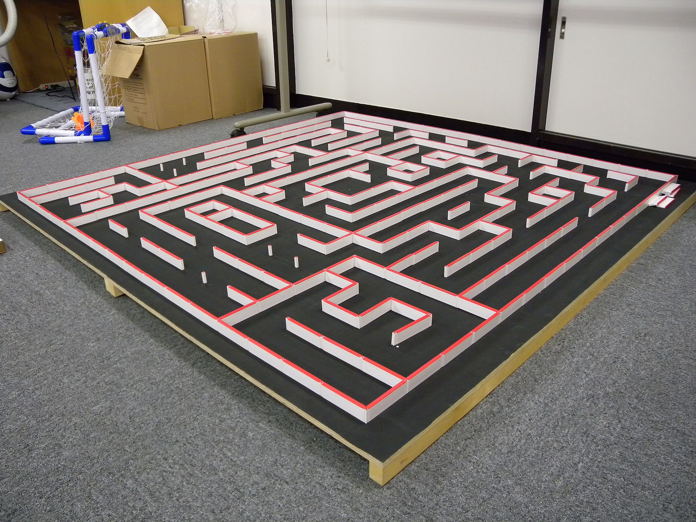
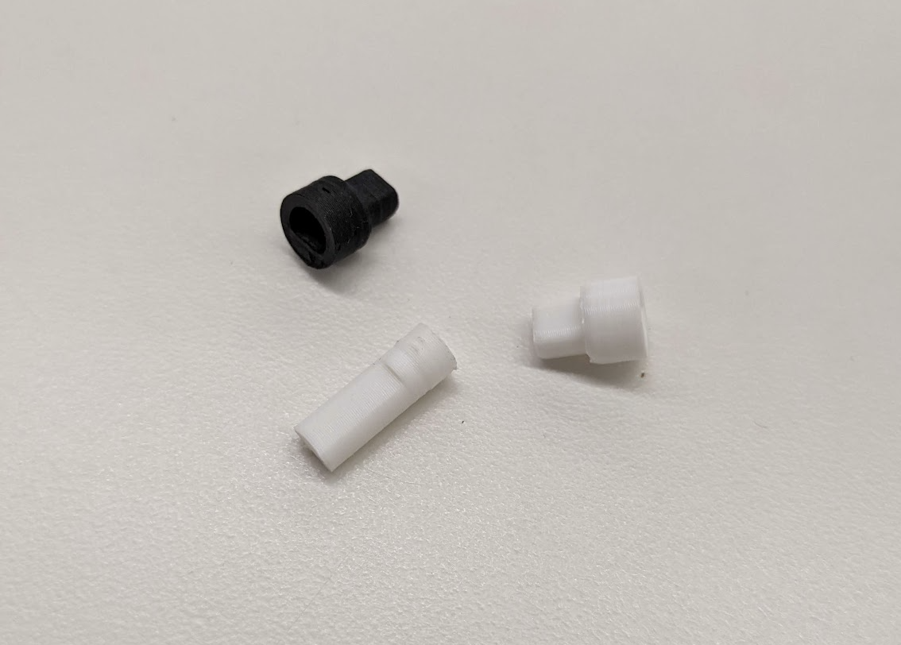
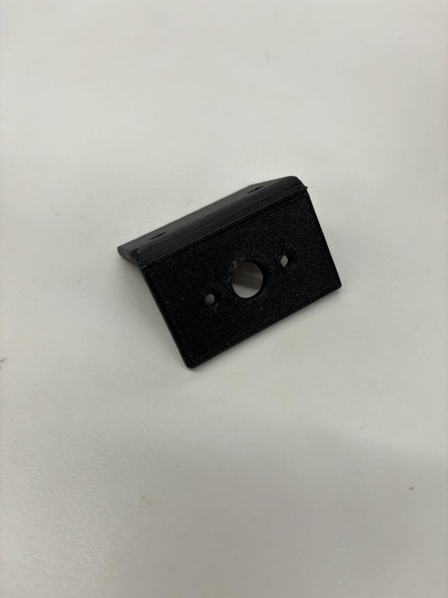
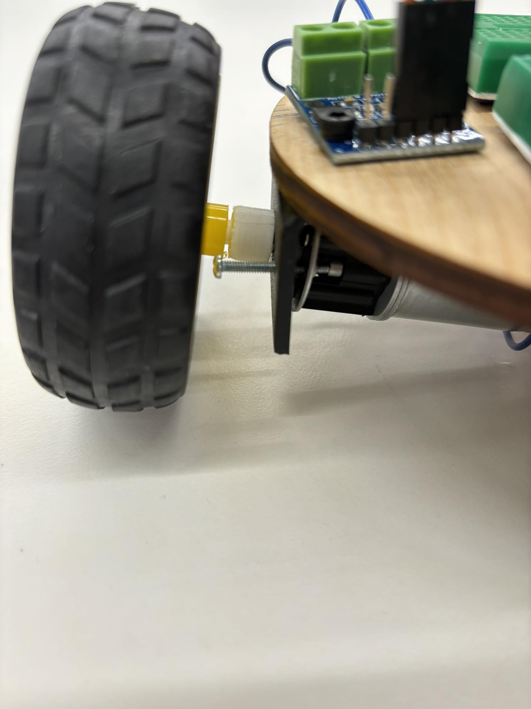
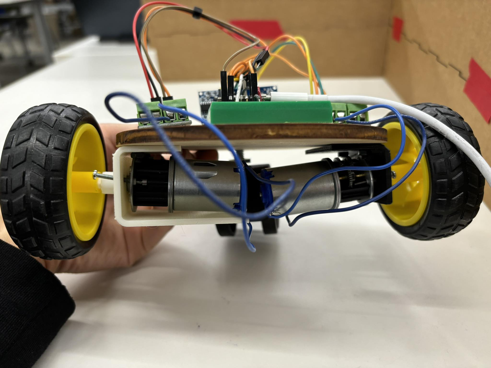
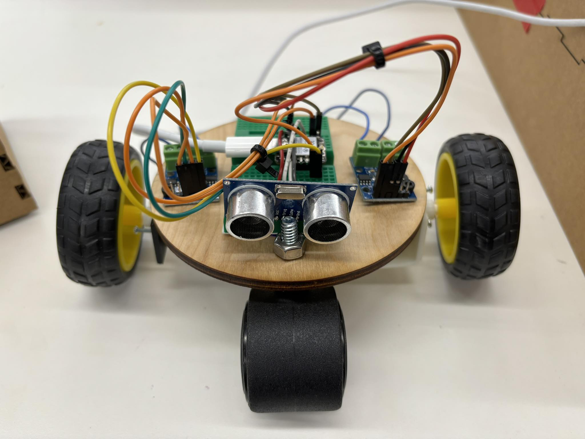
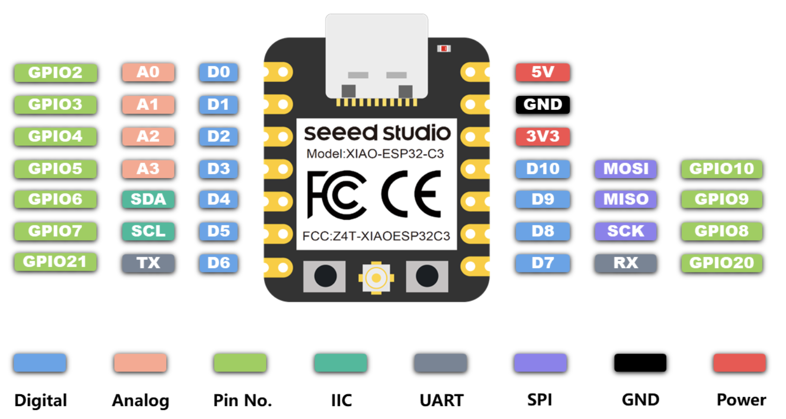

Started in the late 1970s, Micromouse is a competition robotic mice race to solve a 16x16 maze. Each square
cell has side length 180 mm with walls 50 mm high. The mouse needs to map out the maze, find the best path,
and go from one of the four corners to the center of the maze.

Example of a Micromouse mazeExample of a Micromouse robot
I would like to develop my own micromouse! Making the robot autonomously learn the maze will involve
concepts from robotics, including mapping, planning, and localization. Once it knows what the maze looks
like, it will use a search algorithm to find the optimal path. I think the hardest part may be making the
robot small enough, so I will likely loosen those constraints. I will likely have a smaller grid (say 5x5)
with bigger cells (say side length 10cm) than in the real competitions.
Besides the mouse itself, I will make a board with pieces for the walls that one can insert to make custom
mazes. This will allow me to test different maze designs of varying difficulty!
Week 6: Build a robot that can move, turn, and sense distance.
Week 7: Build a board for the robot to move in.
Week 8: Figure out how to explore the maze, i.e., how to convert the robot's sensing data to a map of the
maze.
Week 9: Code the path-finding algorithm.
Week 10: Put it all together! Explore the maze, apply the algorithm to find a path, then make the robot
implement it.
Week 11: Optimizations, e.g., smooth turns around corners, diagonal paths through zig zags, faster speeds
on straight lines than curved lines.
Model and Planning
My general idea for the robot is to have two layers. The first layer holds the breadboard, the sensors (one
on the left, right, and front) and the motors that are connected to the wheels. The second layer holds the
microcontroller and the batteries. My 3D model is in progress!
After making the MVP, the first major issue I noticed was that the motors were not powerful enough to move the
robot, so I switched to a more powerful DC motor. The hole in the smaller wheels only fit the old motors, so I
also had to replace them with larger wheels. To connect the motor and the wheel, I had to 3D print a small piece that
would pressfit in the motor shaft on one side and the hole in the wheel on the other side since the shapes were no
longer a precise match. Getting the dimensions right took many many tries... This piece would also break occasionally
if there was too much pressure applied to it when trying to push in the pressfit, so I also increased the infill
from 15% to 30% to make it stronger.

(Three of Many) Pressfit Tries
I added a caster wheel in the front that was mainly to help micromouse balance, like a tricycle. Otherwise, the base would
often tip forwards or backwards. I also 3D printed a connector piece to replace the cardboard one in the MVP and recut the
base out of wood instead of cardboard to be more sturdy.
The second issue was that the motor itself would rotate sometimes, rather than just the motor shaft rotating.
I first noticed this when the wires kept getting twisted around the motor. To fix this, I added 2 holes in the
connector piece for M2.5 screws to hold the motor in place. This also took a few tries to get the position right, but
it was very successful in fixing the issue! (The screws stick out in the picture because we ran out of
shorter M2.5 screws.)

New Connector Piece with Holes for Screws

New Connector Piece in Micromouse
I noticed that the motors were dipping because there was nothing supporting them. Although they were not touching
the ground, this tilted the wheels at a slight angle so that they were no longer perfectly perpendicular to the ground, which
wasn't causing big problems but also wasn't ideal. I decided to reprint the connector piece with a third side that would lay
under the motor to help support it. Unfortunately, I made the height a little too tall, but it does prevent it from dipping too
drastically.

Motors Dipping but New Connector Piece on Left
For the final assembly, I stuck the breadboard to the base with some tape, screwed the L9110's into the holes on the
side so that they were no longer floating, and clipped the wires to the right size / used zipties to reduce clutter.

Final Assembly
Sensing and Software
Finally, it was time to code! After lots of debugging, we had gotten the ultrasonic sensor to work with the
ESP32 Xiao (see Week 9). Part of the issue was finding the right pair of
pins to use for Trig and Echo; for some reason, D9 and D2 worked but all the other pairs we tried did not. I tried
to find two more pairs of pins for the side ultrasonic sensors on our micromouse, but to no avail. So, I decided to
stick with just a front sensor and utilize turning to explore the maze.

ESP32 Xiao Pin Layout
When first testing the motors, I occasionally encountered a bug where the serial monitor would rapidly disconnect and reconnect.
After searching Google and talking to Bobby, we concluded that this was happening because the USB power supply from my computer was not sufficient for
the motors, and one possible solution was using a LiPo battery instead. At the same time, I noticed a seemingly unrelated issue: the L9110
driver was getting really warm, and occasionally the motor wouldn't turn until I gave it a little push. I think it was because I had
set the motor speed too low for it to turn; the motor stalling seemed to burn through a lot of current. When I increased the motor speed, both issues stopped occurring: the serial monitor
stayed connected and the L9110 driver was no longer getting so hot, so I decided to continue using the USB power supply for now.
At this point, micromouse was able to go straight until it sensed a wall, and then stop. The next major step
was a 90 degree turn. To turn left, I stopped the left wheel and only turned the right wheel. I first tried
to use a counter in the loop function to measure how much it had turned, but I quickly realized
that the time for each loop iteration was not constant and fluctuated quite a bit. As a result, the same number of iterations
would result sometimes in 30 degree turns and sometimes in 150 degree turns. I next tried to use millis
to time how long a 90 degree turn would take. This was better, but also proved to be a little irregular. I think the best
solution is to use a stepper motor in the future, since that gives precise control over how much the motor rotates. The final code
I used is below.
class Ultrasonic {
public:
int trigPin;
int echoPin;
int signalInterval;
unsigned long signalStartTime = 0;
int measured = 3;
long duration;
Ultrasonic(int pin1, int pin2, int interval) {
trigPin = pin1;
echoPin = pin2;
signalInterval = interval; // in microseconds
pinMode(trigPin, OUTPUT);
pinMode(echoPin, INPUT);
}
void sendSignal() {
if ((micros() - signalStartTime > signalInterval) && (measured == 3)) {
signalStartTime = micros();
digitalWrite(trigPin, LOW); // Set the Trigger pin LOW to start a pulse
measured = 2;
}
else if ((micros() - signalStartTime > 2) && (measured == 2)) {
digitalWrite(trigPin, HIGH); // Set the Trigger pin HIGH
measured = 1;
}
else if ((micros() - signalStartTime > 12) && (measured == 1)) {
digitalWrite(trigPin, LOW); // Set the Trigger pin LOW again to complete the pulse
measured = 0; // Signal is done so ready to measure
}
}
void measureSignal() {
if (measured == 0) {
duration = pulseIn(echoPin, HIGH); // Listen for a pulse on the Echo pin
Serial.print("Duration: ");
Serial.println(duration);
measured = 3;
}
}
};
int turningLeft = 0;
int turnedLeft = 0;
unsigned long startTime = 0;
class Motor {
public:
int dirPin;
int speedPin;
Motor(int pin1, int pin2) {
dirPin = pin1;
speedPin = pin2;
pinMode(dirPin, OUTPUT);
pinMode(speedPin, OUTPUT);
}
void setSpeed(float duration) {
if (duration > 1500) {
analogWrite(speedPin, 150);
turnedLeft = 0;
} else {
analogWrite(speedPin, 0);
turningLeft = 1;
startTime = millis();
}
}
};
Ultrasonic ultrasonic(D9, D2, 10000);
Motor leftMotor(D7, D5);
Motor rightMotor(D6, D8);
void goStraight(float duration) {
leftMotor.setSpeed(duration);
rightMotor.setSpeed(duration);
}
void turnLeft() {
analogWrite(leftMotor.speedPin, 0);
analogWrite(rightMotor.speedPin, 150);
}
void setup() {
Serial.begin(115200);
}
void loop() {
ultrasonic.sendSignal();
ultrasonic.measureSignal();
if (turningLeft == 0) {
goStraight(ultrasonic.duration);
} else if (turningLeft == 1 && millis() - startTime < 400) {
turnLeft();
} else if (turningLeft == 1 && millis() - startTime >= 400) {
turnedLeft = 1;
turningLeft = 0;
}
}
This is a video of micromouse's best attempt to turn using the above code despite it being inconsistent most of the time:
Another thing I tried but didn't work out: branching logic for the maze. Once it senses a wall, first turn 90 degrees left.
If there is no wall to the left, go straight and keep exploring. If there is a wall, turn 180 degrees to go in the opposite direction if possible.
Although I implemented the logic, it was not very reliable because of the above issue with the timing. For example, sometimes it would try to
turn 90 degrees, but it hadn't turned enough and still sensed the original wall, so it would try to turn 180 degrees, even
though there was no wall to the left. The code for the logic is below. It uses four booleans turningLeft,
turnedLeft, turning180, and turned180 to record the state at any given point in time.
class Ultrasonic {
public:
int trigPin;
int echoPin;
int signalInterval;
unsigned long signalStartTime = 0;
int measured = 3;
long duration;
Ultrasonic(int pin1, int pin2, int interval) {
trigPin = pin1;
echoPin = pin2;
signalInterval = interval; // in microseconds
pinMode(trigPin, OUTPUT);
pinMode(echoPin, INPUT);
}
void sendSignal() {
if ((micros() - signalStartTime > signalInterval) && (measured == 3)) {
signalStartTime = micros();
digitalWrite(trigPin, LOW); // Set the Trigger pin LOW to start a pulse
measured = 2;
}
else if ((micros() - signalStartTime > 2) && (measured == 2)) {
digitalWrite(trigPin, HIGH); // Set the Trigger pin HIGH
measured = 1;
}
else if ((micros() - signalStartTime > 12) && (measured == 1)) {
digitalWrite(trigPin, LOW); // Set the Trigger pin LOW again to complete the pulse
measured = 0; // Signal is done so ready to measure
}
}
void measureSignal() {
if (measured == 0) {
duration = pulseIn(echoPin, HIGH); // Listen for a pulse on the Echo pin
Serial.print("Duration: ");
Serial.println(duration);
measured = 3;
}
}
};
int turningLeft = 0;
int turnedLeft = 0;
int turning180 = 0;
int turned180 = 0;
unsigned long startTime = 0;
class Motor {
public:
int dirPin;
int speedPin;
Motor(int pin1, int pin2) {
dirPin = pin1;
speedPin = pin2;
pinMode(dirPin, OUTPUT);
pinMode(speedPin, OUTPUT);
}
void setSpeed(float duration) {
if (duration > 1500) {
analogWrite(speedPin, 150);
turnedLeft = 0;
turned180 = 0;
} else if (turnedLeft == 0) {
turningLeft = 1;
startTime = millis();
} else {
turning180 = 1;
startTime = millis();
}
}
};
Ultrasonic ultrasonic(D9, D2, 10000);
Motor leftMotor(D7, D5);
Motor rightMotor(D6, D8);
void goStraight(float duration) {
leftMotor.setSpeed(duration);
rightMotor.setSpeed(duration);
}
void turnLeft() {
analogWrite(leftMotor.speedPin, 0);
analogWrite(rightMotor.speedPin, 150);
}
void setup() {
Serial.begin(115200);
}
void loop() {
ultrasonic.sendSignal();
ultrasonic.measureSignal();
if (turningLeft == 0 && turning180 == 0) {
goStraight(ultrasonic.duration);
} else if (turning180 == 1 && millis() - startTime < 1000) {
turnLeft();
} else if (turning180 == 1 && millis() - startTime >= 1000) {
turned180 = 1;
turning180 = 0;
} else if (turningLeft == 1 && millis() - startTime < 400) {
turnLeft();
} else if (turningLeft == 1 && millis() - startTime >= 400) {
turnedLeft = 1;
turningLeft = 0;
}
}
Since controlling the rotation angle using time was not going to work, I tried a different strategy: turning until the sensor
read a large enough value. Unfortunately, the sensor does not seem to be great at measuring distance when the wall
is at a diagonal, so it usually did not sense anything at all after micromouse had only turned 30-45 degrees and thus would
try going straight. Here is a video of that behavior: